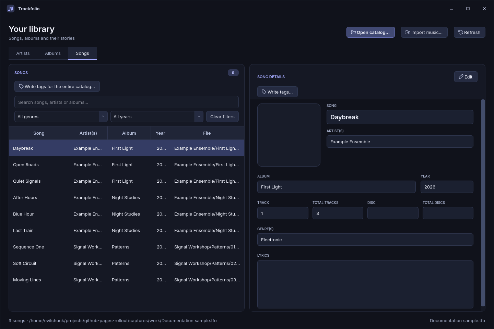
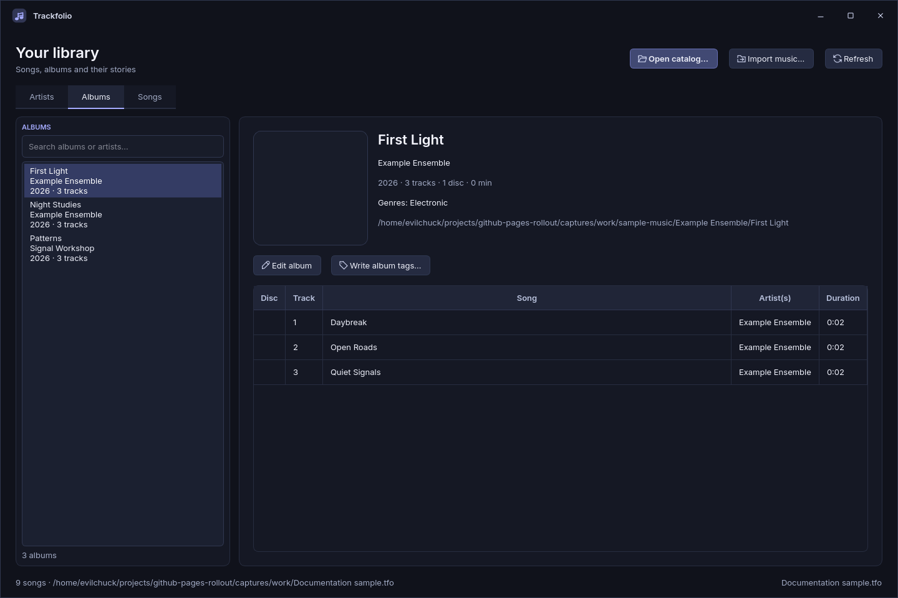
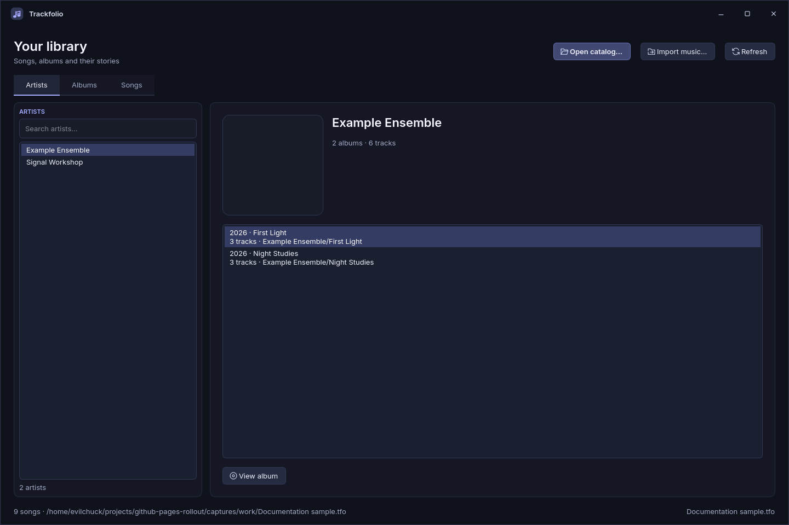

A catalogue of your own
Import music into a local .tfo catalogue and review details even with the music drive disconnected.
Music / desktop / Evilchuck666
Browse the artists, albums and songs in your FLAC and MP3 collection. Correct metadata in a local catalogue, then write your changes back when you're ready.
Python · Qt 6 · SQLite · Linux / Windows / macOS
In use



Import music into a local .tfo catalogue and review details even with the music drive disconnected.
Update titles, artists, dates, genres, lyrics and artwork, individually or in groups.
Save edits in the catalogue first, then review and write tags to accessible music files.
Get started
Download and extract the package for your system, then run Trackfolio. No Python installation needed. Import a music folder, save your corrections, and use Write tags when you want to update the audio files.
SHA-256 checksums ↓ · Release notes & all downloads on GitHub ↗